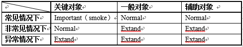

CASE规范
CASE结构¶
Case结构一般在3-5层，第一层为系统名称，中间层为模块/子模块，最后一层为功能点。
系统 — 模块/子模块 — 功能
主要元素¶
1) 测试目的 2) 前提条件 3) 输入数据 4) 操作步骤 5) 预期结果
用例等级¶

常见情况 1) 主要逻辑 2) 常见操作 3) 常见请求 4) 常见配置
非常见情况 1) 容错性（程序逻辑必须要处理的） 2) 非常用路径，出现概率较低 3) 一些只影响界面的影响因素，如分辨率，界面调整。 4) 操作比较复杂 5) 非常见状态、数据
异常情况 1) 异常的影响因素 2) 破坏性操作且发生概率较低 3) 人为造成 4) 产品流程中的例外处理一般是Normal级；程序的错误处理一般是Extend级
注意事项¶
1) 冒烟测试额外选取要求
a) 新加入的功能优先考虑。
b) 冒烟测试用例不能是大纲性的，必须满足用例的全部要素的，是可执行的。是从用例中选取出来供开发执行的。
c) 冒烟测试用例只需要在最常见的测试环境中执行，用例中需要定义。
d) 冒烟测试要让开发能够在2小时内完成。
2) 冒烟测试提交开发原则
a) 冒烟测试用例在开发编码完成前提交。
b) 冒烟测试环境数据由开发自己准备。
c) 测试计划时间不足3天的，不需要进行冒烟测试。
3) 判断测试对象是否主要的依据（用于指导执行，不影响用例分级本身）
a) 是否常用功能
b) 是否决定收入
c) 是否决定品质
d) 是否开发常关注的功能
e) 是否程序容易出错的地方
f) 浏览器
g) 平台
4) 执行注意事项
a) 分级只对本次未修改的功能生效，本次修改或新增的功能，原则上所有case都要执行。
b) 回归过程中，根据测试对象和用例级别确定执行case的级别。
c) 用例分为4级，不考虑测试对象主次程度的情况下。
i. Smoke用例在开发提交测试时必须执行。
ii. Important用例冻结时或提交时，必须执行。
iii. Normal用例在测试过程中至少执行一遍。
iv. Extand用例可根据具体情况（时间安排等）确定是否执行。
v. 项目leader可根据项目具体情况调整以上确定的执行要求。
d) 对于执行有难度的用例尽早汇报。 如：缺少测试工具、数据难构造、测试结果难检查、场景难模拟、软硬件不具备等等。
用例集命名及划分规范¶
- 一个用例集就是一个用例文件
- 对于每个服务，用例集必须有统一的前缀(用例平台根据统一前缀提取用例)，推荐用“test“或者服务名简写如”bidding“等。
- 用例集一般情况以功能逻辑划分，例如testwapfilterblackkwd.py、testwapretrieverandom.py 分别对应了黑词过滤和随机词召回两个功能 。 * 按逻辑划分时，尽量细分，例如testwapfilterblackkwd.py、testwapfilterquery.py，虽然这两个都是过滤相关的用例，但是不要放到一个用例集。
- 我们希望用例集的case最好不要过多（小于20？），如果过多则需要进行拆分，例如拆成testwapfilterblackkwd001.py、testwapfilterblackkwd002.py等
用例集结构规范¶
#coding:GBK
"""
kwd_targetting触发逻辑相关用例
需求:根据用户搜索词进行定向。
"""
import sys
import datetime
class TestCase:
@classmethod
def setup_class(self):
pass
@classmethod
def teardown_class(self):
pass
def setup(self):
pass
def teardown(self):
pass
@attr('smoke')
def test_001(self):
'''
'''
pass
@attr('smoke')
def test_002(self):
'''
'''
pass
- 第一部分为编码声明，我们的case无特殊情况都采用gbk编码
- 第二部分为用例集的说明，采用三引号方式包含，后文会专门对用例集说明的书写规范做说明
- 第三部分为各种import的库
- 第四部分为用例的类，一个用例集只需要定义一个类，且该类的名称建议统一为TestCase
- 除测试用例外，TestCase类中包含四个函数，分别为setupclass、teardownclass、setup、teardown，具体意义请查阅nosetest文档
- 测试用例的命名：统一前缀，建议用test作为前缀，同时建议后面直接接序号 ，如test001、test_002等。测试用例的书写规范后文会详细介绍。
如何对用例集进行说明¶
#coding:GBK
"""
直投下载样式
[rb132] 2019-01-23
------------------------------
[需求说明]
目前直投还不能出下载样式，WF需要配合LDS做这部分的打通
<需求文档链接（如果有）>
[开发说明]
1. 功能说明
- 在业务平台上，下载样式和非下载样式均属于小图、三图和大图；
- 当客户端同时请求多种样式时，先走小图、三图和大图的原有逻辑，相应的下载样式根据配比随机出。、
- 打底逻辑不变
2. 代码变更
http://cr.adtech.sogou-inc.com/D26264
3. 配置变更
<此处写清增加的配置项以及配置项作用，可以有多个，例如>
（1）在某某配置文件增加 xxx，作用xxx功能开关
（2）...
4. 数据变更
<此处写清增加的数据文件、作用、地址等，可以有多个>
（1）增加文件：data/dicts/crowds_orient_dict
- 文件地址：rsync 10.139.17.110::root/search/odin/penglin/LDS/data/dicts/crowds_orient_dict ./data/dicts/ -aP
- 格式: 字段1 \t 字段2 \t 字段3
（2）....
5. 测试建议
<开发测试建议>
6. 其他说明
<可为空>
[测试说明]
<本用例svn地址>
[rb131] 2019-01-10
------------------------------
[需求说明]
[开发说明]
[测试说明]
"""
如何写用例描述¶
def test_001(self):
'''
验证KT触发策略是否正确
前提准备:
1.设置三组广告
2.kt字典对应1 2 两组报文中的groupid
3.proto协议中加入kt字典中对应的关键词返回内容
测试步骤及结果验证:
1.发送50次请求， 预期结果：触发广告在1 2 两个报文中，trig_type=5
2.删除字典，发送50次请求 预期结果：触发reload，返回结果走normal逻辑account_id 对应三组报文，trig_type=0
- 测试用例描述使用三引号包含，切记不要用#
- 用例描述包括几部分：用例测试目的、测试前提准备、测试步骤、以及对应每个步骤的预期结果
- 用例描述的第一行，用比较简明的一句话描述出该条用例的测试目的
- 后面的数行，写测试用例的前提准备
- 再后面写测试步骤，以及对应的预期结果
关于用例编写过程中的注释¶
def test_001(self):
'''
省略...
'''
# 数据准备
kwd = "线上棋牌室" # ufs返回"线上棋牌室1~3" 等3个词
wuid = 'AAHf/anXCgAAAAqQKVMvvQAAQwM='
# global conf
self.conf.set_exp_parameter(['FLAG_random_max_kwd_num:2'])
self.conf.set_exp_parameter(['FLAG_sel_random_ratio:1'])
# 设置ufs 返回数据
query_vec = self.ufs.set_query(1, kwd = kwd)
ufs_res = {'status' : 0, 'ufs_expids' : '0', 'query_vec' : query_vec}
self.ufs.set_ufs2ks_res_p(ufs_res, self.debug)
# 设置wap_random_kwd
self.data.data_build('\t','wap_random_kwd_file', '10','随机词1','10' )
self.data.data_build('\t','wap_random_kwd_file', '11','随机词2','10' )
# 启动ufs
self.serv.start_mock_server('UFS_MOCK')
# 启动ks
assert self.serv.start_ks() == 0
# 发送TITAN请求
recv_kwd = []
self.titan.set_titan_req(req_type = 3, wuid = wuid, debug = self.debug)
for _ in range(100):
result = self.titan.request2ks(debug = self.debug)
# ks返回结果验证
assert_equals(result['status'], 0)
assert_equals(result['kwd_num'], 3)
assert_equals(result['keywords_list'][0]['flag'], 100)
assert_equals(result['keywords_list'][1]['flag'], 113)
assert_equals(result['keywords_list'][2]['flag'], 113)
- 不同于测试描述，测试注释是指上文“#”开头的，用于说明及分割用例段落
- 每一个描述相同功能的用例段落的前面，必须要有测试注释来说明其用途（例如数据准备、global conf配置等等）
关于pep8¶
- 大家在写case时，尽量遵守pep8书写规范（除每行长度）。在写完所有case后，可以使用用例平台的pep8调整功能来规范case，具体方法见用例平台使用说明